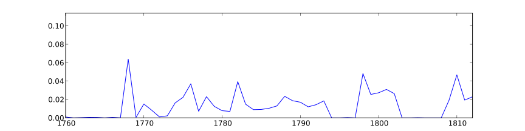
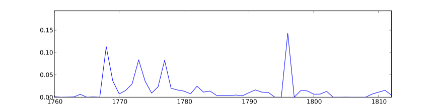
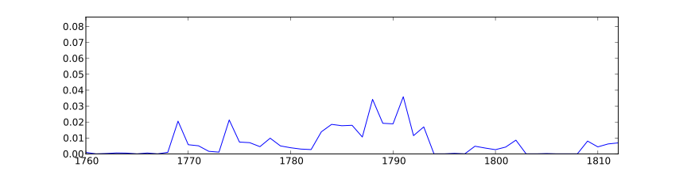

fennish credence credentials ratifications dumas despatches plenipotentiary humphries grade secretary ratification filed cypher lear pichon formal recording negotiate ratify legation
To: Jefferson, Thomas; Washington, George; NA; Short, William; Hamilton, Alexander; Jay, John; Adams, John; Madison, James; Carmichael, William
despotic monarchy delegated leaders abuses decisions monarchical bias doctrines sanctioned governing composing alien hatred wrongs sect undue fiction constitution fundamental
To: Jefferson, Thomas; NA; Madison, James; Washington, George; Monroe, James; Randolph, Edmund; Jay, John; Duane, William; Granger, Gideon
dumouriez langeac municipalities jacobins tiers mob montmorin necker tumult moustier diplomatique swiss mirabeau parliaments notables noblesse brabant brussels nobles tumults
To: Jefferson, Thomas; Jay, John; Washington, George; Short, William; NA; Madison, James; Adams, John; Price, Richard; Harrison, Benjamin
hl honour obedt humbl servt, excellency humble honoured whome servt., acquaint obedient excellencys servant, acquit favour excellencies repeating favourable hereof
To: Jefferson, Thomas; Washington, George; Steuben, Friedrich Wilhelm Ludolf Gerhard Augustin, Baron von; Harrison, Benjamin; Adams, John; Jay, John; Huntington, Samuel; Wood, James; Clark, George Rogers; Brown, James
appropriations collectors expenditures departments enumeration erection assignee expense organisation claimant accounting internal clerks registers appropriation department definition lots aggregate drs
To: Jefferson, Thomas; Washington, George; NA; Madison, James; Gallatin, Albert; Hamilton, Alexander; Senate; House of Representatives; Monroe, James; Harrison, Benjamin
hhd hhds tobo hogsheads crop tobacco flour crops wheat prices unsold purchaser farmers bushels sell superfine lb purchasers tobaccos til
To: Jefferson, Thomas; NA; Jefferson, George; Board of Trade; Randolph, Thomas Mann, Jr.; Auditors; Madison, James; Washington, George; Randolph, Thomas Mann
lading package havre maire cowes trumbull trunks capn houdon consignment busts l'orient baggage packing rouen sails plants passenger parker consign
To: Jefferson, Thomas; Limozin, André; Short, William; NA; Jay, John; Jefferson, George; Brown, James; Trumbull, John; Madison, James
cant sincerely, n't sorry intend haveing i wait morrow makeing missed indisposition afraid receivd am glad yours sevt contrive exceedingly
To: Jefferson, Thomas; Jefferson, George; Madison, James; Randolph, Martha Jefferson; Steuben, Friedrich Wilhelm Ludolf Gerhard Augustin, Baron von; Randolph, Thomas Mann, Jr.; Short, William; Washington, George; Randolph, Thomas Mann
he modesty chevalier thinks himself finds risks him feels his knows speaks says understands gather enmity sees resides son deserving
To: Jefferson, Thomas; NA; Washington, George; Madison, James; Monroe, James; Jefferson, George; Short, William; Gallatin, Albert; Muter, George
nominatd goodrich burr supervisor nicholson pensylva bailey abraham candidate thompson removals vice marshal esq inspector peters vermont resigned vacancy nominations
To: Jefferson, Thomas; NA; Washington, George; Madison, James; Gallatin, Albert; Senate; Short, William; Monroe, James; Randolph, Thomas Mann
transports hood enemys riflemen battery cornwallis battle shot pounders posted arnold disaffected junction wounded crossed mounting reinforcement howe capes reinforcements
To: Jefferson, Thomas; NA; Steuben, Friedrich Wilhelm Ludolf Gerhard Augustin, Baron von; Huntington, Samuel; Washington, George; Weedon, George; Eppes, Francis; Harrison, Benjamin; Davies, William; Lee, Thomas Sim
brothers, servts servts., ourselves brother, we us annuities our wayne poison honestly servants, ours ploughs cordiality red reap delaying fires

To: Jefferson, Thomas; NA; Washington, George; Madison, James; Short, William; Steuben, Friedrich Wilhelm Ludolf Gerhard Augustin, Baron von; Harrison, Benjamin; Carmichael, William; Adams, John
knew told seemed shewed telling presidt spoke replied did verily dismiss threw e.r remained conversation had saw hesitated was gave
To: Jefferson, Thomas; NA; Washington, George; Madison, James; Monroe, James; Short, William; Jay, John; Steuben, Friedrich Wilhelm Ludolf Gerhard Augustin, Baron von; Page, John
foundery ballendine undertaker manufactory hospitals assistants westham workmen hiring hire artificers rations assistant surgeon dies director implements engraver hospital cautions
To: Jefferson, Thomas; NA; Board of Trade; Muter, George; Board of War; Washington, George; Auditors; Davies, William; Harrison, Benjamin
castries mr. rumsey franks lambe bancroft marechal partners wilson dr. barrett bannister yours, franklin vergennes morris jay bowdoin randall marocco
To: Jefferson, Thomas; Washington, George; NA; Adams, John; Short, William; Madison, James; Muter, George; Monroe, James; Randolph, Martha Jefferson; Carmichael, William
colonists warfare insidious colonies colony tyrants cruelty grievances perfidy grenville alliances vengeance slavery parliament usurpations great-britain shield renounce imposing contending
To: Jefferson, Thomas; NA; Washington, George; Carmichael, William; Monroe, James; Madison, James; Harrison, Benjamin; Franklin, Benjamin; Virginia Assembly
quartermaster hillsborough forage commissary battalion hoods teams matthews rockingham amherst embodied quay lieutenants steuben regiment barracks recruits discharges volunteers delinquents
To: Jefferson, Thomas; NA; Steuben, Friedrich Wilhelm Ludolf Gerhard Augustin, Baron von; County Lieutenants; Muter, George; Davies, William; Wood, James; Washington, George; Huntington, Samuel; Harrison, Benjamin
screw mulberries ram rows vines hills perpendicular steam tube ewes plains canal wheel cylinder potatoes insect pump worm tree trees

To: Jefferson, Thomas; NA; Randolph, Thomas Mann, Jr.; Washington, George; Randolph, Martha Jefferson; Minor, Peter; Short, William; Jefferson, George; Randolph, Thomas Mann
taleyrand buonaparte collegues envoys commee freneau coalition debate ticket directory rejection stamp acknoleged fenno n.y. salutations tenderest bache p.m. martha
To: Jefferson, Thomas; Madison, James; Randolph, Thomas Mann; NA; Monroe, James; Randolph, Thomas Mann, Jr.; Randolph, Martha Jefferson; Eppes, John Wayles; Washington, George; Short, William
blanca vickelhadge dey regencies scheld gardoqui lamb algiers moors ransom regency turkish algerines morocco tunis turks emperor rupture swedes captives
To: Jefferson, Thomas; NA; Carmichael, William; Washington, George; Jay, John; Adams, John; American Commissioners; Monroe, James; Madison, James
sjl reads jefferson. huntington enclosure countersigned entry annapolis muter located vi banister feb identical feb. recorded williamsburg innes apr enclosures
To: Jefferson, Thomas; Harrison, Benjamin; NA; Muter, George; Washington, George; Board of Trade; Eppes, Elizabeth Wayles; Eppes, Francis; Virginia Assembly; Currie, James
heth richmd lynchburg charlottesville chairs hams nail cyder stockings spinning pair burton mahogany bell waggon harness richardson nails match cloth
To: Jefferson, Thomas; Jefferson, George; NA; Randolph, Martha Jefferson; Randolph, Thomas Mann; Brown, James; Randolph, Thomas Mann, Jr.; Muter, George; Barnes, John
bones mineral animal philosophical buffon needle curiosities teeth mammoth agricultural missouri michaux hemisphere wing researches societies europeans society bone discoveries
To: Jefferson, Thomas; NA; Washington, George; Hopkinson, Francis; Patterson, Robert; Sully, Thomas; Wistar, Caspar; Madison, James; Michaux, André
creatures universally neighbour ridiculous selfish unpopular struggle extravagance misfortunes astonishing civilization prejudices bold modest spite propagated evry horror bred flourishing
To: Jefferson, Thomas; NA; Washington, George; Madison, James; Monroe, James; Randolph, Thomas Mann, Jr.; Harrison, Benjamin; Jay, John; Page, John
proj counterp ustates exemptions comprised vice-consuls contraband neutrality tribunals stipulation neutral contracting aggression belligerent exemption prizes genet art passports molestation
To: Jefferson, Thomas; NA; Washington, George; Genet, Edmond Charles; Madison, James; Hammond, George; Morris, Gouverneur; Ternant, Jean Baptiste; Monroe, James
else think incertainty suppose minutely thing better push chuse puts know amiss divert how can done suffice perhaps foresee what
To: Jefferson, Thomas; Madison, James; Washington, George; NA; Monroe, James; Jefferson, George; Steuben, Friedrich Wilhelm Ludolf Gerhard Augustin, Baron von; Randolph, Thomas Mann; Short, William
craven sd th bennet incloses lease po jefferson peyton appurtenances indenture sarah lucy tenement presents heirs ye hereto demised greeting
To: Jefferson, Thomas; NA; Washington, George; Peyton, Craven; Hamilton, Alexander; Coxe, Tench; Adams, John; Rittenhouse, David; Board of Trade
pustule lectures hallet quill vaccine jenner chemistry virus inoculated students invention inoculation academy studies patients sea-water mathematics drawings pox architecture
To: Jefferson, Thomas; NA; Waterhouse, Benjamin; Washington, George; Madison, James; Currie, James; Vaughan, John; Monroe, James; Randolph, Thomas Mann, Jr.
troy dwt grs units coins cubic coined alloy coinage copper decimal ounces silver coining ounce pendulum gold weights unit grains
To: Jefferson, Thomas; NA; Rittenhouse, David; Washington, George; Hamilton, Alexander; Short, William; Rutherford, John; Hogendorp, G. K. van; Continental Congress
certiorari privily distrained arrere devisee sherif probat committment subp complainant fieri plaintif returnable bail store-house plaintiff amerced convict demandant defendant
To: NA; Jefferson, Thomas; Washington, George; Townshend, Thomas, first Viscount (Sydney); Virginia Assembly; Muter, George; Monroe, James; Messrs. Ingliss and Long; Madison, James
bracton vel quis burglary arson larceny quarantine visiters manslaughter mulatto rape treason privy punishable impeached treasons deserter forfeiture accessories forfeitures
To: NA; Jefferson, Thomas; Washington, George; Virginia Assembly; Wythe, George; Harrison, Benjamin; Lincoln, Levi; Auditors; Madison, James
thee thou thy universe virtues fervent patriotism republics republicanism fellow elective animated beloved greatness glorious social homage triumph admire cherish
To: Jefferson, Thomas; NA; Washington, George; Madison, James; Virginia Assembly; Galloway, Benjamin; Monroe, James; Allegany County Republican Citizens; Siéyès, Emmanuel Joseph, Abbé
barziza papa ellen madam paradise kiss pleasures polly breakfast miss oh affectionately, lady charming dabney jack aunt sister patsy daughter
To: Jefferson, Thomas; Randolph, Martha Jefferson; Eppes, Francis; Randolph, Thomas Mann, Jr.; Jefferson, Martha; Madison, James; Eppes, Mary Jefferson; Jefferson, Mary; Short, William; Cosway, Maria
closes deposeth cherokee cresap delawares shawanese illinois kaskaskia surveys saith deponent surveyed pre-emption caveat messuage location cherokees petitioner bowles petitioners
To: Jefferson, Thomas; NA; Washington, George; United States Circuit Court, Virginia District; Virginia Assembly; Harrison, Benjamin; Board of Trade; Clark, George Rogers; Madison, James
cessions deral delegation confederation executives chairman resolve ordinance resolutions confederacy refugees congress committee admission quotas funding concurrence seats trenton amendments
To: Jefferson, Thomas; NA; Harrison, Benjamin; Washington, George; Madison, James; House of Representatives; Virginia Assembly; Carmichael, William; Congress
gamble encloses tangier lisbon staphorsts chiappe fox lafayette hubbard staphorst acknowledges humphreys fenwick asks commons van circular pinckney america. lords
To: Jefferson, Thomas; Washington, George; NA; Carmichael, William; Short, William; Humphreys, David; Madison, James; Pinckney, Thomas; Franklin, Benjamin
wirt jaquet riedesel hare new-orleans batture parole pagan rodney pollock counsel transitory bush capitulation tazewell edict scott plea pleading wilkinson
To: Jefferson, Thomas; NA; Washington, George; Hay, George; Tazewell, Littleton W.; Madison, James; Rodney, Caesar A.; Claiborne, William C. C.; Eppes, John Wayles
mccaul dearborne walker meriwether littlepage intelligencer lewis burwell nicholas topic message clarke govr carter pope dec supplementary harvie rob version
To: Jefferson, Thomas; NA; Washington, George; Madison, James; Harrison, Benjamin; Lewis, Nicholas; Jefferson, George; Gallatin, Albert; Auditors
anas vols sheets edition publications publishing printing vocabularies map volumes print encyclopedie ink printer printed pages sheet burke bookseller translation
To: Jefferson, Thomas; NA; Washington, George; Madison, James; Stockdale, John; Jefferson, George; Rittenhouse, David; Milligan, Joseph; Monroe, James
wod favr wch wd shd shod govt mr skelton wh armstrong nt coles admn dawson arbitrators duane recd barnes acct
To: Jefferson, Thomas; Jefferson, George; NA; Madison, James; Barnes, John; Gallatin, Albert; Randolph, Thomas Mann; Short, William; Monroe, James
honor obd sevt hum ob honored transmit mo obt enclose serv herewith obed huml ulto inst. servant respectfull obdt sert
To: Jefferson, Thomas; Washington, George; Harrison, Benjamin; Hammond, George; Steuben, Friedrich Wilhelm Ludolf Gerhard Augustin, Baron von; Jay, John; Genet, Edmond Charles; Huntington, Samuel; Hamilton, Alexander; Adams, John
creditors wayles assets bills ballance drawer debtors specie moiety debit indemnify balance penet bonds debts refund payment remitting bond remittances
To: Jefferson, Thomas; NA; Jefferson, George; Board of Trade; Washington, George; Auditors; Willink, Van Staphorst & Hubbard; Lyle, James; Hamilton, Alexander
whale spermaceti w.i fishery oils nantucket fishermen fisheries exports lumber fishing indigo imports competition bounties newfoundland arret fish ton tons
To: Jefferson, Thomas; NA; Foreign Ministers; Washington, George; Adams, John; Lafayette, Marie Joseph Paul Yves Roch Gilbert du Motier, Marquis de; Congress; Jay, John; Coxe, Tench
crescent muley landais suliman puchelberg gunner brigantine lordships deck martinique jamaica pilot hispaniola privateer undersigned crew vessell brig captured sloop
To: Jefferson, Thomas; NA; Washington, George; Hammond, George; Board of Trade; Genet, Edmond Charles; Cutting, John Brown; Randolph, Edmund; American Commissioners
reciept assurances salute emploiment acknolege recieved acknolegement yourself recieve recieving accept neighborhood acknolegements deferred thankful safer succesful uninformed safest misunderstanding
To: Jefferson, Thomas; Jefferson, George; Madison, James; Barnes, John; Short, William; Monroe, James; Randolph, Thomas Mann; Gallatin, Albert; Washington, George
adjustment delicate objection etiquette preclude inferred delicacy interfering inducements objections injurious remark solidity improbable suspence affects grounded intimation urge doubted

To: Jefferson, Thomas; Washington, George; NA; Madison, James; Harrison, Benjamin; Monroe, James; Jay, John; Hammond, George; Short, William
whensoever parishes recited whatsoever hereby ordinances intituled worship wares respectively dues thereto dying whereas empowered thereunto proprietors thereof respective fincastle
To: NA; Jefferson, Thomas; Washington, George; Board of Trade; Board of War; County Lieutenants; Unknown; Muter, George; Hamilton, Alexander
instalment instalments borrowing paiments loan outfit florins funds mortgage fund million sinking millions min pa. emitted sterl paiable sec borrow
To: Jefferson, Thomas; NA; Washington, George; Jefferson, George; Madison, James; Hamilton, Alexander; Short, William; Monroe, James; Randolph, Thomas Mann
usefully pretentions unpleasant delicacy diffidence conscious deserving vanity actuated censure intrude emolument my persevering confess acknowledgments candor myself solicit kindness
To: Jefferson, Thomas; NA; Washington, George; Madison, James; Monroe, James; Short, William; Lafayette, Marie Joseph Paul Yves Roch Gilbert du Motier, Marquis de; Virginia Assembly; Jay, John
deux j'ai che lettre elle por ainsi etre ouvrage celui los honneur mio ont depuis d'un aussi v.e votre tre
To: Jefferson, Thomas; NA; Jefferson, Thomas; Congress; Maia (Vendele), José da; Washington, George; Monroe, James; Unknown; Champion, Henry; Cosway, Maria